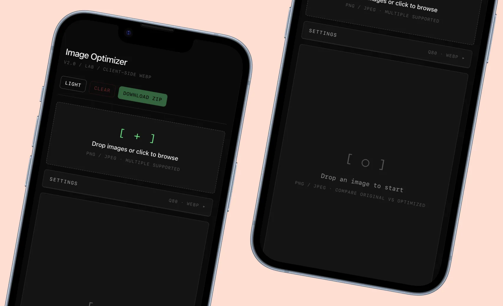

Image Compressor
Compress PNG and JPEG for the web, with format comparison and a visual diff, so choosing the right file size takes one decision.
- Version
- v0.1
- Type
- Public Tool, Web
- Period
- 2024 to now
- Stack
- HTML, Canvas API, WebP
- Team
- Solo

The problem
Designers tend to either skip image optimization or overthink it. Most tools have conservative defaults and confusing advanced settings, so heavy assets end up in production.
With the Image Compressor you drop in an image, see four versions side by side at different compression levels and pick the smallest one that still looks right. There are no settings to learn.
How it works
The tool compresses your image at four quality levels (high, medium, low, aggressive) and shows them side by side with file sizes. You move a slider to compare any two versions visually. When one looks right, you download it.
It also converts formats: drop a PNG and you get JPEG and WebP versions next to the original, so you can compare formats as well as quality levels.

Interface previewWhere it is now
v0.1 in development. The core compression and side-by-side preview work. Next iteration will add batch processing and EXIF stripping.